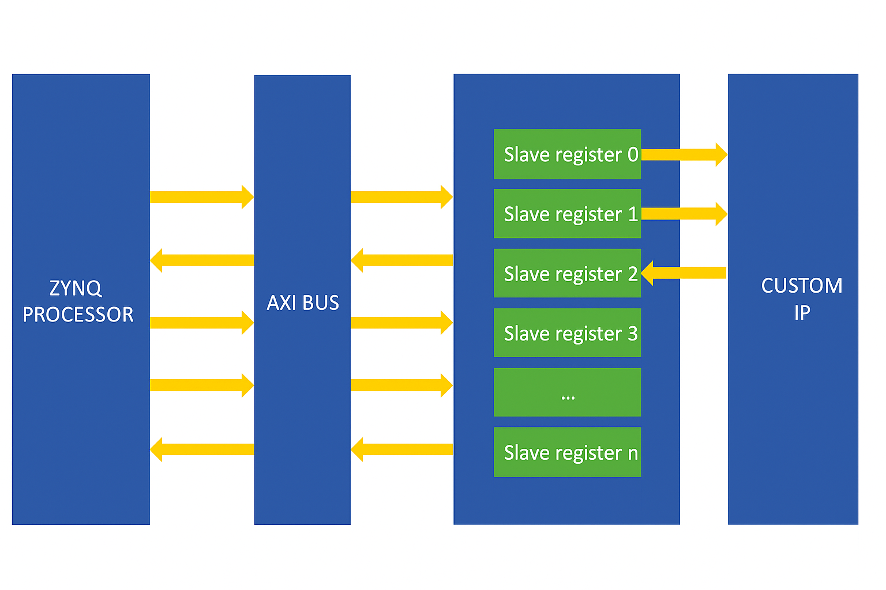
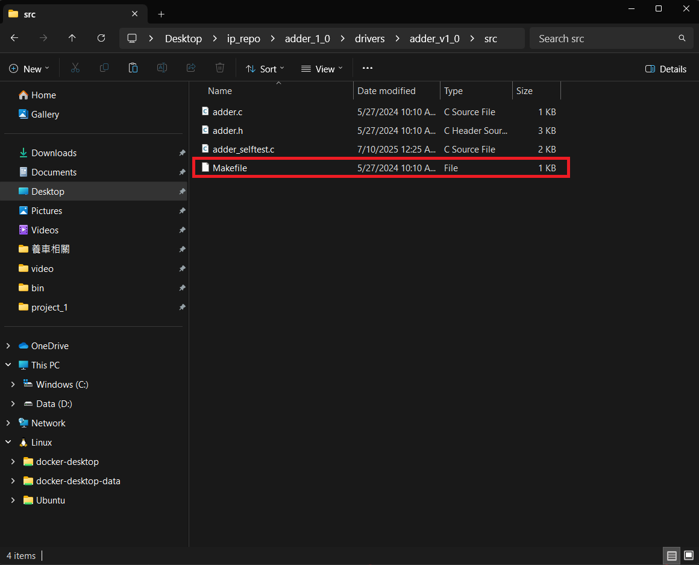
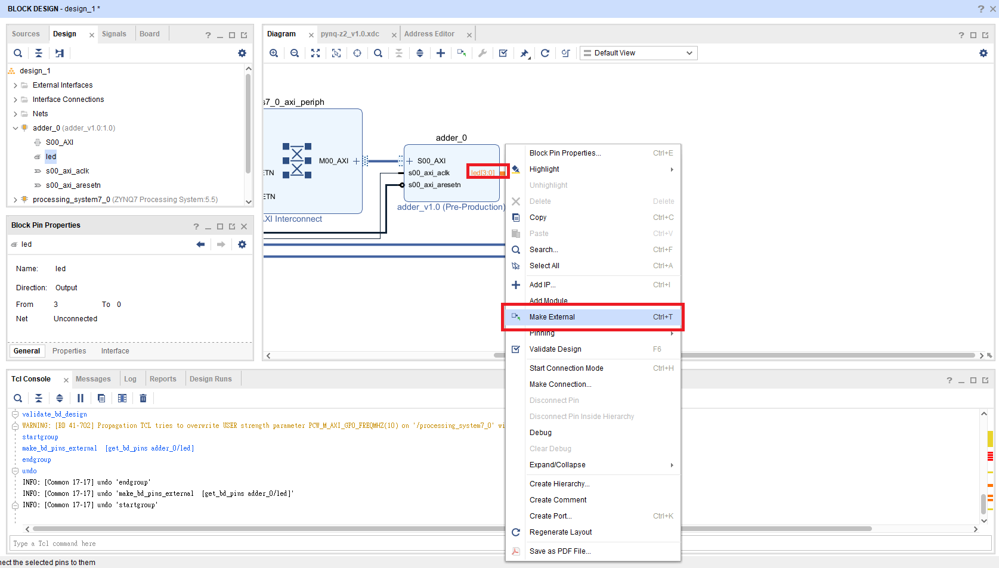
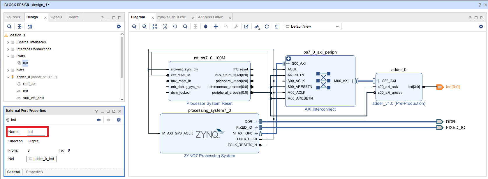
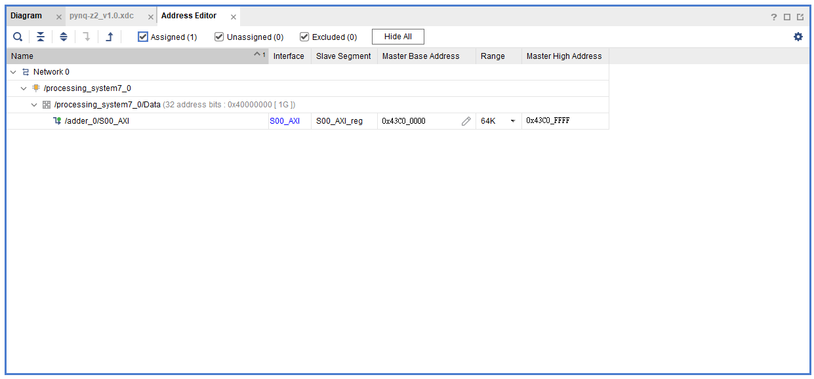

Part3-AXI-Lite
AXI-Lite 是 AXI4 的簡化版本，只有 單一傳輸通道、不支援 burst，適合小資料量傳輸
常用於：控制 IP 核心的啟動、初始值設定、讀取狀態與結果

點我下載參考資料夾，內含本次教學或 Lab 所需的程式碼（ZIP）
Part3.1 Create AXI-Lite IP
-
Create a new Vivado project
-
Add
./XDC/pynq-z2_v1.0into project -
點選上方
Tool -> Create and Package New IP，接著選擇Create a new AXI4 peripheral。
-
取名為 adder，並且創建一個 IP_repo 的資料夾來裝 IP

-
點選
Interface Type -> Lite，並且將Number of Registers設成4
📌 AXI Interface Type 簡介：
- AXI4：支援 burst 傳輸，適合大筆資料傳輸（如 DMA）。
- AXI4-Lite：簡化版 AXI4，不支援 burst，適合控制類 IP 使用（設定參數、讀寫 Register）。
- AXI4-Stream：Stream 介面，沒有 Address wire，適合連續資料處理（如影像、音訊）
📌 Number of Register - 指的是 IP 可對外映射到記憶體位置的 Register（即 slave registers） - 每個 register 預設為 32-bit，可由 ZYNQ PS 透過 AXI4-Lite 以 offset 存取（如：0x00, 0x04, 0x08, ...）
-
點選
Edit IP
-
此時 Vivado 會跳出一個新的 project，並將
HDL/adder.v加入到當中去，該 project 是用來修改 IP 設定的
-
依序照下方圖片修改 Verilog Code


-
下圖為最終的 File Hierarchy
 - adder_v1_0.v: 最外層的 Top-Level Wrapper 模組
- adder_v1_0_S00_AXI.v: AXI4-Lite Interface 控制模組
- adder.v: 自己設計的邏輯電路模組
- adder_v1_0.v: 最外層的 Top-Level Wrapper 模組
- adder_v1_0_S00_AXI.v: AXI4-Lite Interface 控制模組
- adder.v: 自己設計的邏輯電路模組對於
AXI Handshake Protocol有興趣的可以觀看adder_v1_0_S00_AXI.v內部的實做邏輯AXI-Lite 使用與 AXI4 相同的「握手機制」來控制每一筆資料的傳輸。每個 channel（例如寫入位址、寫入資料、讀取位址等）都採用以下這組訊號配對：
txt valid ↔ readyVALID：由 Master 提出，表示「我準備好要送資料了」
READY：由 Slave 提出，表示「我準備好要接資料了」
只有當兩邊同時為 1 時，傳輸才會被執行
-
點開你的 IP repo 資料夾，找到 Adder IP 的
driver -> your_IP_name -> src資料夾，將內部的Makefile內容替換成Driver/Makefile， 直接複製貼上內部的內容，不要取代掉該檔案
-
回到 package IP 畫面將沒有打勾的部分點進去修改，最後 Package IP。

-
回到原來的 Project 將剛剛包裝好的 IP 加入進來

-
Create Block Design
-
加入
ZYNQ7 PS和adder_v1.0，並完成下方接線 (基本上自動連接即可)
-
對
adder_v1.0的 Output port led[3:0] 點右鍵Make External
-
將該 Output Port 改名為
led
-
檢查 Address Editor 有沒有自動分配 Address 給我們剛寫好的 IP

-
Create HDL Wrapper and Generate Bitstream
-
Export
.xsa(include bitstream)
Part3.2 Vitis Project
-
開啟 Vitis 建立 workspace 資料夾，並使用剛剛 Export 出來的
*.xsa建立 Platform Component -
透過 Example Project中的
Hello World建立新的 Application Project 加入檔案src/main.c以及Driver/*內的程式複製到下圖紅色部分
此次教學 Driver 為寫好的版本，若之後包裝其他 AXI IP 需要撰寫 Driver 可至該 IP 的資料夾，內部有該 IP 的 Driver Code 可修改

-
Vitis 需要的是
ps7_init.tcl，然而自製 IP 也有屬於自己的tcl，因此需要到Settings\launch.json的Initialization file修正
-
Run the Program

Note
若沒有執行 Part 3.1 的第 10 點，則需要修改 platform 中的三個 makefile
- platform/Sources/hw/sdt/drivers/
/src/Makefile - platform/Sources/ps7_cortex_a9_0/standalone_domain/bsp/hw_artifacts/drivers/
/src/Makefile - platform/Sources/zynq_fsbl/zynq_fsbl_bsp/hw_artifacts/
/src/Makefile
將makefile中的 OUTS = *.o 修改為 OUTS=$(addsuffix .o, $(basename $(wildcard *.c)))